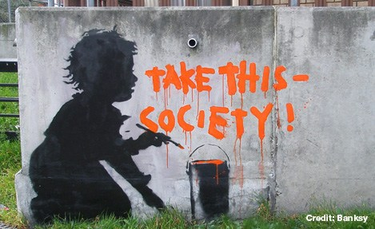

Credit
This piece is diffrent from his others becasue of the location, its not seen at a busy place for people to take notice.It shows little boy in the act of painting the slogan, as an act to show society that everyone matters no matter what.This piece however has currently removed. At Holland Park Roundabout in the Shepherd’s Bush area of London.
2011-04
Spray Paint
London, UK